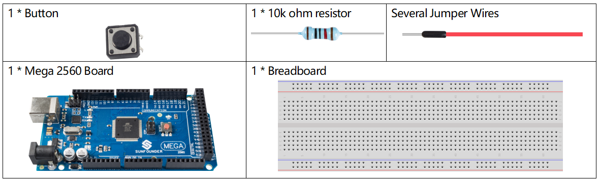
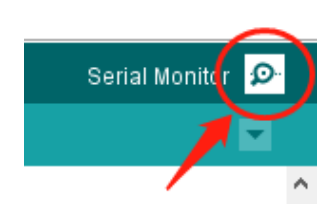

1.4 Digital Read¶
Overview¶
You can use the digitalRead() command to read the level status from a digital pin. The command is suitable for digital input elements such as Button, Touch sensor, infrared motion sensor, etc. This article will take Button as an example to read the level state.
This example also shows you how to monitor the state of a switch by using USB to establish serial communication between a control board and a computer.
Components Required¶
Note
Refer to Part 2 to check details of hardware.
Fritzing Circuit¶
In this example, we read the signal of the button with the digital pin 2. When the button is not pressed, the digital pin 2 (through the drop-down resistor) is connected to ground to read the low level (0); when the button is pressed, the two pins are connected and when the pin is connected to the 5V power supply, the high level (1) is read.

Note
If you disconnect the digital I/O pin from everything, the LED may blink erratically. This is because the input is “floating” - that is, it doesn’t have a solid connection to voltage or ground, and it will randomly return either HIGH or LOW. That’s why you need a pull-down resistor in the circuit.
Schematic Diagram¶

Code¶
After uploading the code to the Mega2560 board, we can open the serial port monitor to see the reading value of the pin. When you press Button, the serial port monitor will display 「1」 and when Button is released, 「0」 will be displayed.
Code Analysis¶
Start the serial communication in setup() and set the data rate to 9600.
Serial.begin(9600);
You also need to set the status of the digital pin 2 to INPUT to read the output status of Button.
pinMode(2, INPUT);
Use the digitalRead() statement in loop() to read the level state of the digital pin 2 and declare a variable to store the state.
int buttonState = digitalRead(2);
Print the value stored by the variable on the serial port monitor.
Serial.println(buttonState);
Use delay() statements to make printing results easy to observe.
delay(1);
※ How to turn on Serial Port Monitor¶
Click the magnifier icon at the top right of the Arduino IDE programming window to open the Serial Monitor.
Phenomenon Picture¶